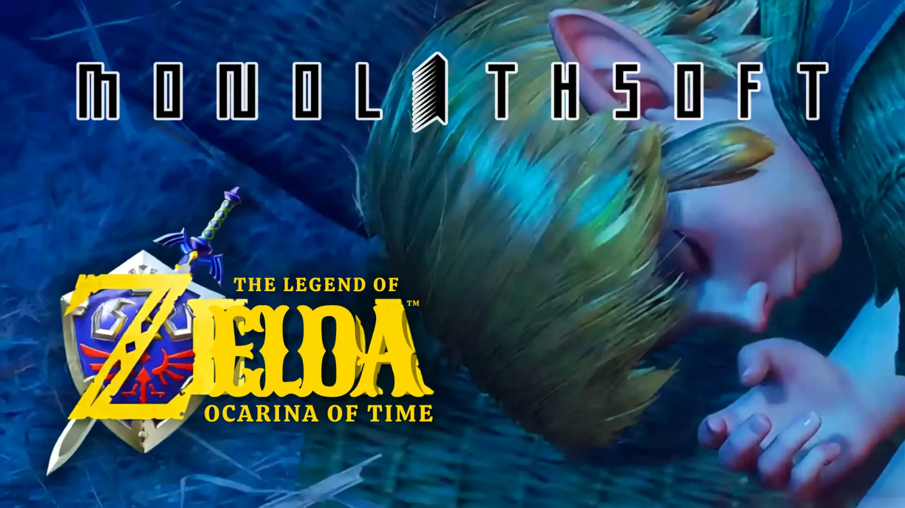

Luiso · 3 de septiembre de 2026 · 2 min de lectura
Sí, Sí... ¿te está costando ver la pantalla del teléfono? Es el humo que te está largando el celular desde esta nota. PERO...
¿Y si el esperado remake de The Legend of Zelda: Ocarina of Time estuviera en manos de Monolith Soft? Esa posibilidad volvió a ganar fuerza durante las últimas horas después de que una tienda noruega incluyera al estudio responsable de Xenoblade Chronicles como desarrollador del juego.
La información aparece en la ficha de producto de Elkjøp, uno de los principales minoristas de los países nórdicos. En ella, el remake de Ocarina of Time para Nintendo Switch 2 figura con Monolith Soft como desarrolladora y Nintendo como parte de la información editorial/distributiva correspondiente. La ficha también apunta a un lanzamiento durante 2026.
El problema es que Nintendo nunca anunció oficialmente quién desarrolla el juego. Las tiendas suelen utilizar información proporcionada por distribuidores o bases de datos internas y, en determinados casos, pueden introducir datos provisionales o directamente incorrectos.
De hecho, Nintendo Life considera que por ahora hay que tomar la información con bastante cautela y señala que no existe evidencia independiente que confirme a Monolith Soft como responsable principal del remake.
Porque Monolith Soft no es ajena a Hyrule.
El estudio japonés lleva más de una década colaborando estrechamente con Nintendo en la saga Zelda. La propia Monolith Soft explica en una entrevista oficial que comenzó a participar en proyectos de Zelda con Skyward Sword, aportando diseñadores y planificadores. Posteriormente tuvo un papel importante en el desarrollo de Breath of the Wild y Tears of the Kingdom.
Eso hace que la posibilidad de que Monolith participe nuevamente en un Zelda no resulte descabellada. Pero existe una diferencia importante: haber colaborado en otros Zelda no significa necesariamente que Monolith Soft sea el estudio principal del remake.
Nintendo cuenta con su propio equipo interno dedicado a la saga Zelda, EPD Production Group No. 3, mientras que Monolith Soft históricamente ha trabajado como estudio de apoyo en proyectos de Nintendo.
La idea de que Monolith Soft podría estar involucrada en Ocarina of Time tampoco nació con esta ficha de Elkjøp.
Durante los meses previos al anuncio oficial del remake ya habían circulado rumores que señalaban al estudio como posible colaborador. En mayo, distintas publicaciones recogieron afirmaciones no verificadas según las cuales Monolith Soft estaría involucrada en el proyecto.
Aquellas informaciones procedían de fuentes de rumores y no fueron confirmadas por Nintendo.
Ahora, la aparición del nombre de Monolith Soft en una ficha comercial volvió a poner esa teoría sobre la mesa.
Hasta que Nintendo hable, sin embargo, seguimos estando ante humo.